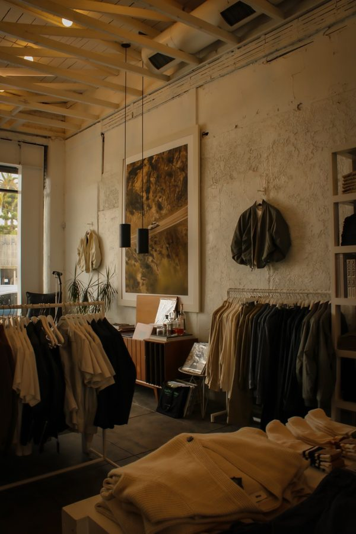
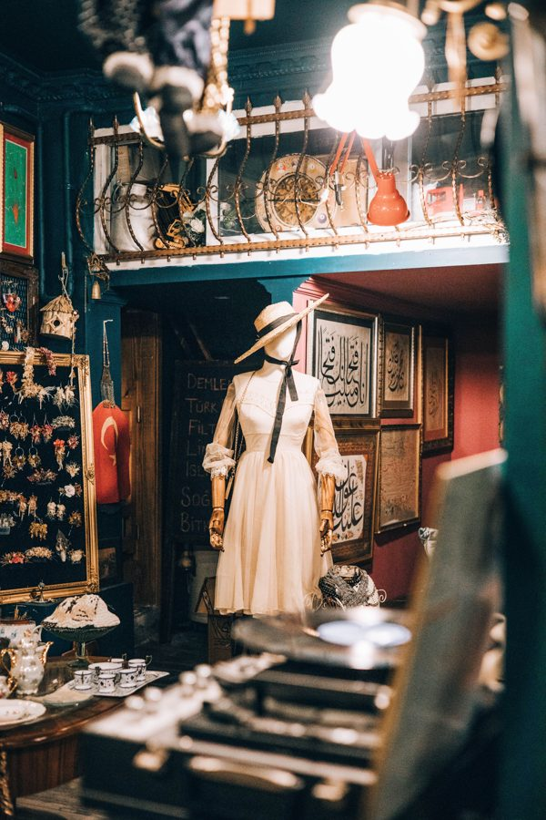

Welcome to the World of Vintage
Vintage items remind us of the past and show us how fashion, design and everyday life have changed over time.
From classic clothing to old cameras and vinyl records, vintage objects have a special charm and
history.
Each item can have a story that makes it feel special ✓.
Step inside, look around, and find the era you love.
Something old can still bring new inspiration.
What Will You Discover?
 Classic vintage fashion
Classic vintage fashion- Interesting vintage objects
- Reasons people
love vintage style (below)
Reasons People Love Vintage
| Four reasons we love vintage | |
|---|---|
| Individuality | Vintage items can help people create a personal style. |
| History | Older objects can reflect the time in which they were made. |
| Reuse | Buying second-hand items can extend their useful life. |
| Craftsmanship | Some people appreciate older materials and construction methods. |
Vintage and Sustainability
Choosing second-hand items can help reduce demand for new products. However, the environmental impact depends on factors such as how an item is made, used and transported.
Our Favourite Vintage Ideas
- Wear a classic jacket with modern clothing.
- Decorate a room with a restored vintage object.
- Listen to music on a record player.

photo

Discover more about the meaning of vintage (Wikipedia).
Keep the memories, enjoy the style.